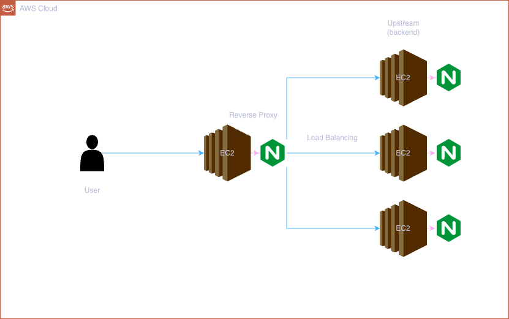
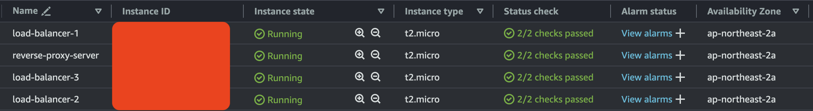
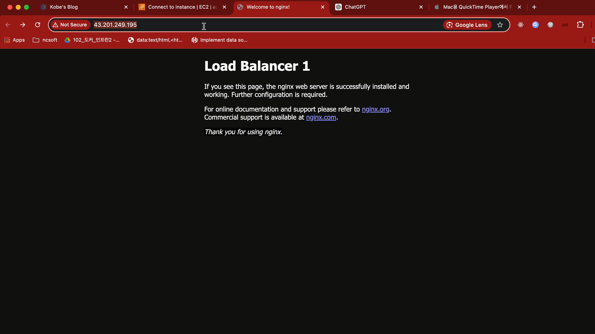
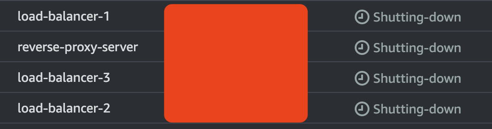

Wed, Aug 21, 2024

I'll handle how to create reverse proxy server and do load balancer using terraform.
First, we will use terraform to create four instance. It's so comfortable for similar jobs to handle them simultaneously.
Create main.tf file in your workspace.
terraform {
required_providers {
aws = {
source = "hashicorp/aws"
version = "~> 4.16"
}
}
required_version = ">= 1.2.0"
}
provider "aws" {
region = "ap-northeast-2"
}
resource "aws_security_group" "app_sg" {
name = "app-security-group"
description = "Allow inbound traffic 22 and 80"
ingress {
from_port = 22
to_port = 22
protocol = "tcp"
cidr_blocks = ["0.0.0.0/0"]
}
ingress {
from_port = 80
to_port = 80
protocol = "tcp"
cidr_blocks = ["0.0.0.0/0"]
}
}
resource "aws_instance" "app_server" {
count = 4
ami = "ami-008d41dbe16db6778"
instance_type = "t2.micro"
key_name = "aws-kobe"
# User data script to install and start Nginx
user_data = <<-EOF
#!/bin/bash
sudo yum install nginx -y
sudo systemctl start nginx
EOF
tags = {
Name = count.index == 0 ? "reverse-proxy-server" : "load-balancer-${count.index}"
}
}ingress : an option to handle inbound rule. We have to open 22 port to connect an instance and open 80 port to run a nginx server.count : count to create an instance.If you finish writing terraform configuration, follow the below command.
# Initialize the directory
$ terraform init
# Check formatter
$ terraform fmt
# Check if the configuration is valid
$ terraform validate
# Apply the configuration
$ terraform apply
We launched four instances with just one command, terraform apply. It's magic.
And then create default.conf in /etc/nginx/conf.d folder and copy the below code.
upstream backend {
server 3.34.133.28:80;
server 52.79.112.114:80;
server 13.124.254.126:80;
}
server {
listen 80;
server_name localhost;
location / {
root /usr/share/nginx/html;
index index.html index.htm;
proxy_pass http://backend;
}
error_page 500 502 503 504 /50x.html;
location = /50x.html {
root /usr/share/nginx/html;
}
}proxy_pass : If the request passes location '/', reverse proxy server sends upstream section.upstream : The requests send to each serever.
It's completed.
We need to remove the instnaces with one command.
# Terminates resources managed by your project
$ terraform destroy
It's also magic.
It was good time to practice terraform and understand the concept with reverse proxy and load balancer. Let's call it a day.